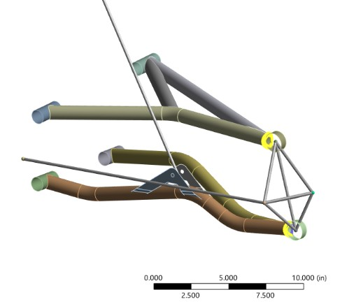
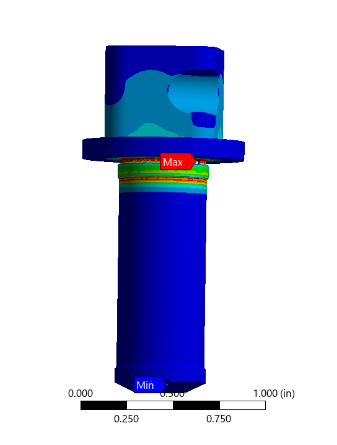
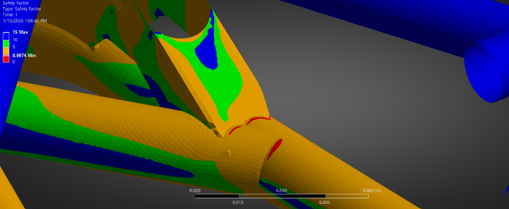
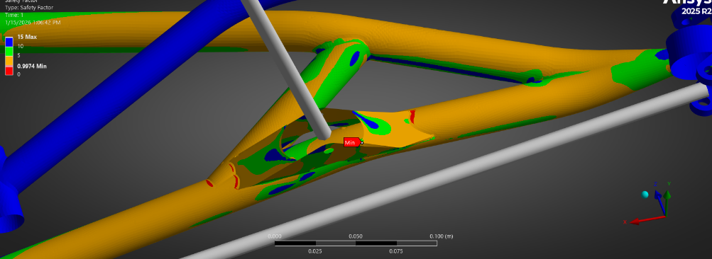
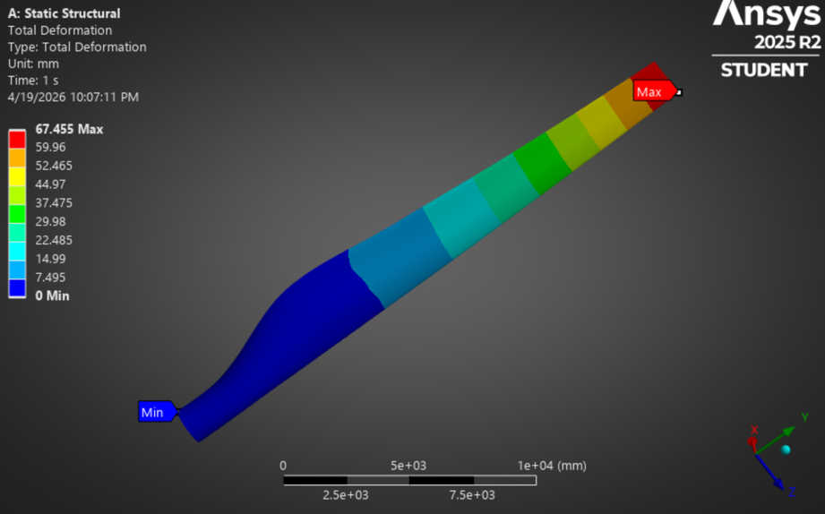
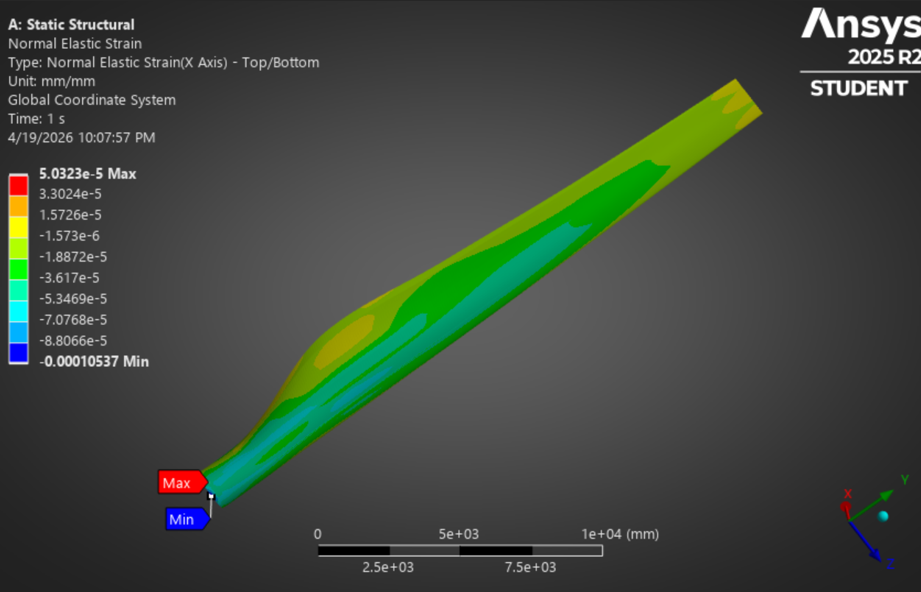

Ansys Projects
This page is in development. By the end of April, it will include various images of Ansys projects I have developed. Projects will include the following: Wind Turbine, Airfoil, Bike Frame, Beam Modeling, and Suspension Linkages
Overview
Over the course of my engineering education and projects, I have done lots of design analysis on various mechanical components, systems, and assemblies. I will be including a summary of each analysis I conducted on this page, but for now, please enjoy an unorganized, unexplaned, unfiltered selection of images showing various Ansys analysis I have done for some past projects. This page will be finalized soon...
Gallery: Some recent sketches





